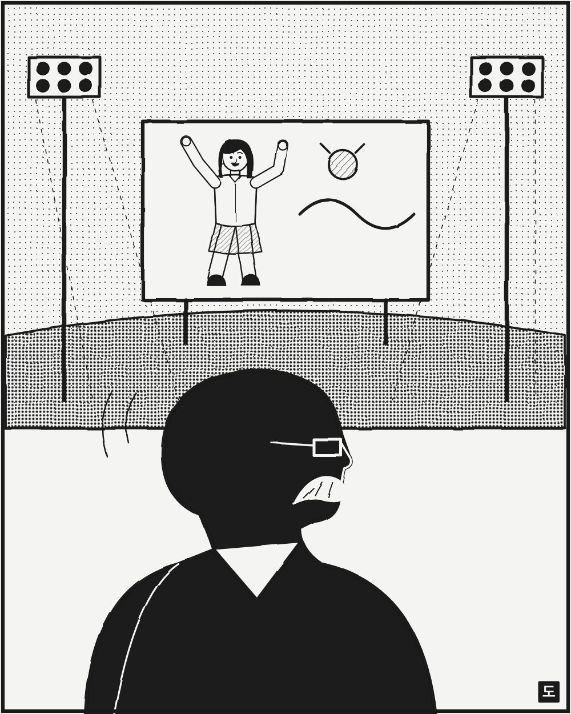

광고·마케팅 업계 뉴스 · 발행인 SM C&C 윤석진
영어 광고판에 인도의 일상어를 앉힌 콧수염 광고인

독자 여러분, 오늘은 인도 광고에 '인도의 목소리'를 찾아 준 피유시 판데이를 소개합니다. 풍성한 콧수염과 큰 웃음의 그는 오길비 인도를 오래 이끌었고 2018년 오길비 글로벌 크리에이티브 수장이 됐습니다. 영어와 서구식 문법에 기대던 인도 광고에 거리의 말투와 생활의 유머를 앉힌 사람입니다. 1994년 캐드버리 '쿠츠 카스 해이'는 크리켓 경기장에서 춤추는 여성을 통해 초콜릿을 어른의 즐거움으로 바꿨고, 접착제 브랜드 페비콜 광고는 '얼마나 단단히 붙는지'를 엉뚱한 상황극으로 보여 주며 국민 광고가 됐습니다. 보다폰 '주주'도 그의 손을 거쳤습니다. 2025년 일흔 살로 세상을 떠났을 때 인도 광고계는 '한 시대가 끝났다'고 했습니다. 우리 말로, 우리 생활에서 출발하라는 그의 고집은 지금 한국 광고에도 그대로 통하는 숙제입니다.